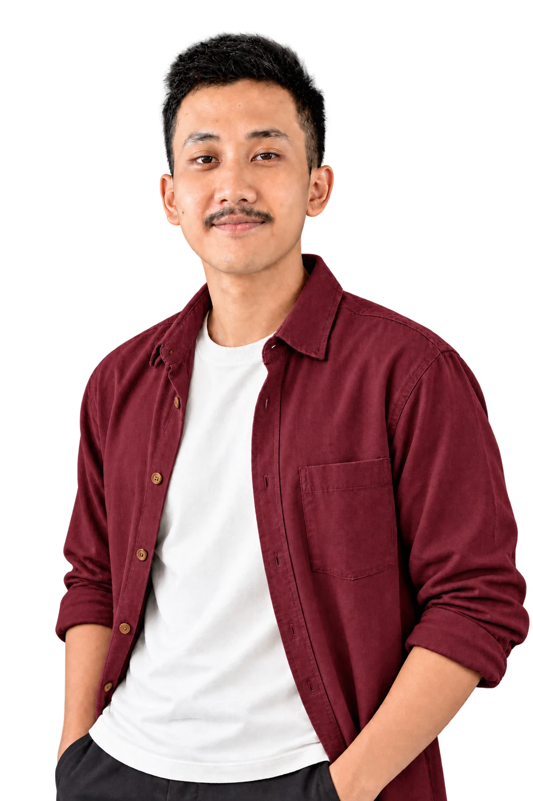

VISUALS WITH CHARACTERCIANJUR, INDONESIA

HALO, SAYAHafidz Aulia
Hafidz Aulia
Rachman.
Graphic Designer
& Video Editor
Desain yang berbicara.
Video yang bercerita.
01 / SELECTED WORK
Setiap karya punya cerita.
Ini beberapa di antaranya.
Karya pilihan.
02 / BEHIND THE WORKTENTANG SAYA
Ide jadi visual.
Visual jadi
cerita.
Saya Hafidz Aulia Rachman, kreator visual yang berfokus pada desain grafis dan video editing.
Saya mengolah ide menjadi visual yang punya karakter, mulai dari desain untuk media sosial hingga video untuk kebutuhan konten dan promosi.
01
Desain Grafis
↗02
Video Editing
↗03 / LET’S CREATE Terbuka untuk kolaborasi
Punya ide?
Yuk, wujudkan.
↗Mari ngobrolUntuk peluang kerja, proyek kreatif,
atau cerita yang perlu divisualkan.